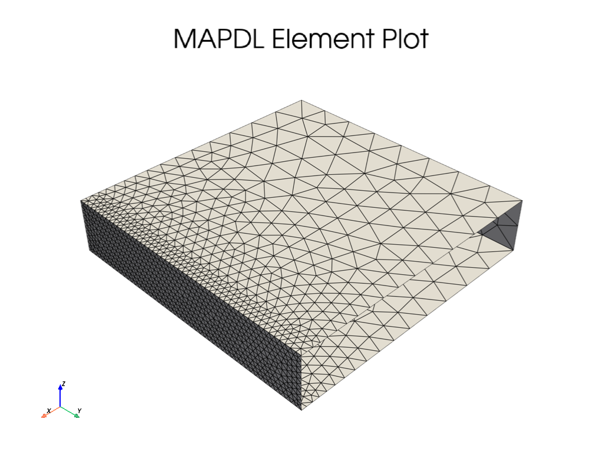

Note
Go to the end to download the full example code.
MAPDL Element Size Transition Example#
This example shows you how to control the mesh density using PyMAPDL.
There are many cases in which you will want to control the density of the mesh nearby a region of local high stresses (e.g. simulated crack, filleted bracket, etc.). This usually introduces a sharp element size transition in the mesh. This example demonstrates one way to reduce this effect using a simple geometry.
First, start MAPDL as a service.
from ansys.mapdl.core import launch_mapdl
mapdl = launch_mapdl()
print(mapdl)
Product: Ansys Mechanical Enterprise Academic Student
MAPDL Version: 24.2
ansys.mapdl Version: 0.68.6
The Geometry (a box)#
This example uses very simple geometry. In this case, a 3D box with 4 sides. The two remaining sides are open, and we have a rectangular tube. Its dimensions are 5 x 5 x 1. We create this using 8 keypoints and then building 4 areas.
mapdl.prep7()
k0 = mapdl.k(1, 0, 0, 0)
k1 = mapdl.k(2, 0, 5, 0)
k2 = mapdl.k(3, 5, 5, 0)
k3 = mapdl.k(4, 5, 0, 0)
k4 = mapdl.k(5, 0, 0, 1)
k5 = mapdl.k(6, 0, 5, 1)
k6 = mapdl.k(7, 5, 5, 1)
k7 = mapdl.k(8, 5, 0, 1)
a0 = mapdl.a(1, 2, 3, 4)
a1 = mapdl.a(5, 6, 7, 8)
a2 = mapdl.a(3, 4, 8, 7)
a3 = mapdl.a(1, 2, 6, 5)
Mesh size#
We set the global mesh size to 0.7, but we’re particularly interested in
face a2, so we set the element size of that face to 0.1. Then we just
need to specify an element type (we use SHELL181 here) and mesh our geometry.
Additionally, we specify that we want triangular elements using mshape.
This is purely to demonstrate the effect. This will work just as well
for a quadrilateral mesh.
mapdl.esize(0.7)
mapdl.aesize(a2, 0.1)
mapdl.mshape(1, "2D")
mapdl.et(1, "SHELL181")
mapdl.amesh("ALL")
mapdl.eplot(show_edges=True, show_axes=False, line_width=2, background="w")
Smoothing the transition#
The mesh mostly looks fine, but we have quite a sharp transition in element size along the edges of our focus area. This is likely undesirable because these are corners and generally require a higher degree of accuracy. This is simple to remedy, however.
To do this, we need to take the keypoints that bound a2 and set their element
size to be 0.1 as well. This sets all elements near those keypoints to a size
of 0.1 including elements not on a2 itself. This spreads the transition away
from the edges.
To demonstrate this we first clear our existing mesh using aclear. Then we use kesize to set the keypoint element sizes, and finally we remesh. The results are self-evident.
Smoothing the transition into a2#
Similarly, if we were happy to reduce the mesh size at the edges of a2, we
could set the keypoint element sizes to be an intermediate value, which would
shift the main location of the size transition to within the face of a2.
Stop mapdl#
mapdl.exit()
Total running time of the script: (0 minutes 10.024 seconds)